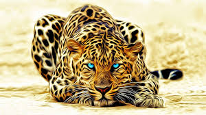

Animals play an essential role in human life and planet earth. Ever since an early time, humans have been using animals for their benefit. Earlier, they came in use for transportation purposes.
Further, they also come in use for food, hunting and protection. Humans use oxen for farming. Animals also come in use as companions to humans. For instance, dogs come in use to guide the physically challenged people as well as old people.
In research laboratories, animals come in use for drug testing. Rats and rabbits are mostly tested upon. These researches are useful in predicting any future diseases outbreaks. Thus, we can protect us from possible harm.
Astronomers also use animals to do their research. They also come in use for other purposes. Animals have use in various sports like racing, polo and more. In addition, they also have use in other fields.
They also come in use in recreational activities. For instance, there are circuses and then people also come door to door to display the tricks by animals to entertain children. Further, they also come in use for police forces like detection dogs.
Similarly, we also ride on them for a joyride. Horses, elephants, camels and more come in use for this purpose. Thus, they have a lot of importance in our lives.